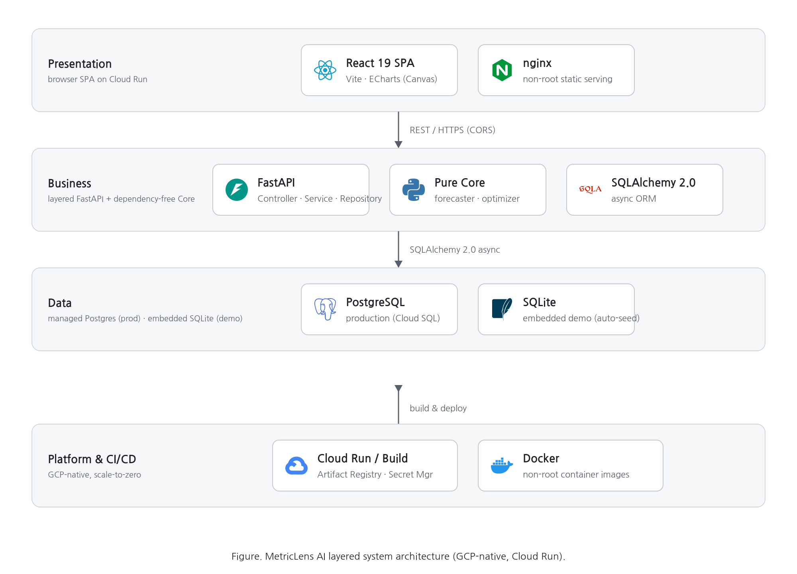
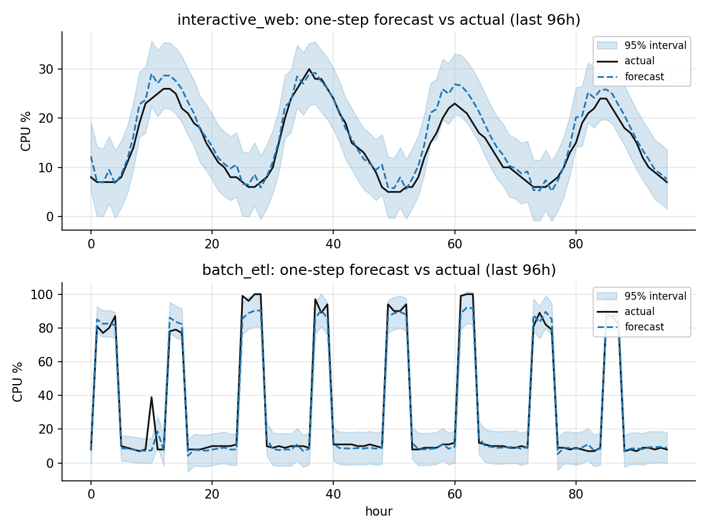
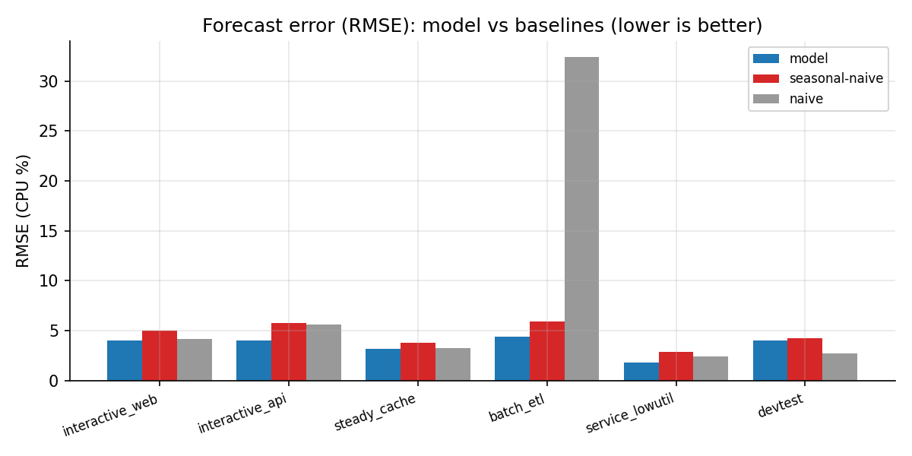

MetricLens AI
Lightweight time-series server-load forecasting & dynamic resizing optimisation
Forecast load with a GPU-free, CPU-only model and derive SLO-preserving minimal allocations via integer programming — monitoring and resizing real GCP instances.
Lee Yongwon (lead) · Seo Hannyeong · Song Simwoo | → / Space to advance
On-premise is chronically over-provisioned
- Azure trace (SOSP'17): 60% of VMs average below 20% CPU — wasted capacity and energy.
- Public-cloud optimizers (CAST AI, Compute Optimizer…) are unusable in air-gapped / regulated on-prem.
- On-prem monitors stop at threshold-based "reporting" — no SLO-constrained optimisation.
→ A tool is needed that quantifies "how much can we safely shrink" — externally independent, GPU-free, data-driven.
Forecast → SLO-constrained integer-programming resizing

Three-tier layered · GCP-native

Runtime · CI/CD flow

Lightweight, white-box forecasting
- Seasonal-trend decomposition + AR(1) residual correction exploits autocorrelation
- Point forecast + 95% prediction interval (from out-of-sample backtest RMSE)
- Standard library only — no native deps, no GPU
Measured coverage (PICP) 0.93–0.98 → well-calibrated

Robust peak (p95) + exact integer program
- Robust peak: the 95th percentile, not the max — immune to single transient spikes.
- Smallest integer allocation under the headroom constraint by exact enumeration.
Bursty hosts are correctly held · memory-bound hosts shrink CPU only — trustworthy downsizing.
Real infrastructure, not a mock
- Cloud Monitoring ingests CPU·memory of real instances (ml-web/api/batch/idle).
- Compute Engine API changes real machine types (stop→change→start).
- ≤300,000 KRW/month budget guard + protected-instance denylist for safety.
Non-uniform, grounded data
- Grounded in public traces: Azure (SOSP'17) · Alibaba 2018 · Barroso & Hölzle.
- AR(1) autocorrelation · day-to-day variation · trend · heteroscedastic noise · anomalies (deterministic).
Beats baselines, well-calibrated
| Metric | Result |
|---|---|
| Beats seasonal-naive (RMSE) | 6 / 6 |
| Beats both baselines | 5 / 6 |
| Diebold-Mariano p<0.05 | 4 / 6 |
| Interval coverage (PICP) | 0.93–0.98 |
Evaluated with MASE · sMAPE · DM test · PICP/MPIW — more rigorous than a single MAPE.

The gap competitors cannot enter
Between SaaS optimizers (telemetry egress), CSP recommenders (single cloud) and on-prem monitors (descriptive).
Click through it yourself
Run forecasts, resize, browse History, and run Test Scenarios (real GCP sync / real resize / model evaluation) right in the dashboard.
MetricLens AI · Team Googling — thank you.